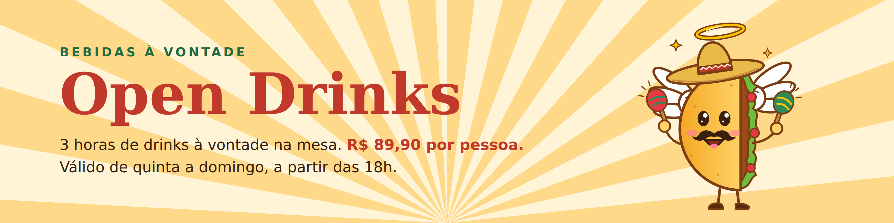
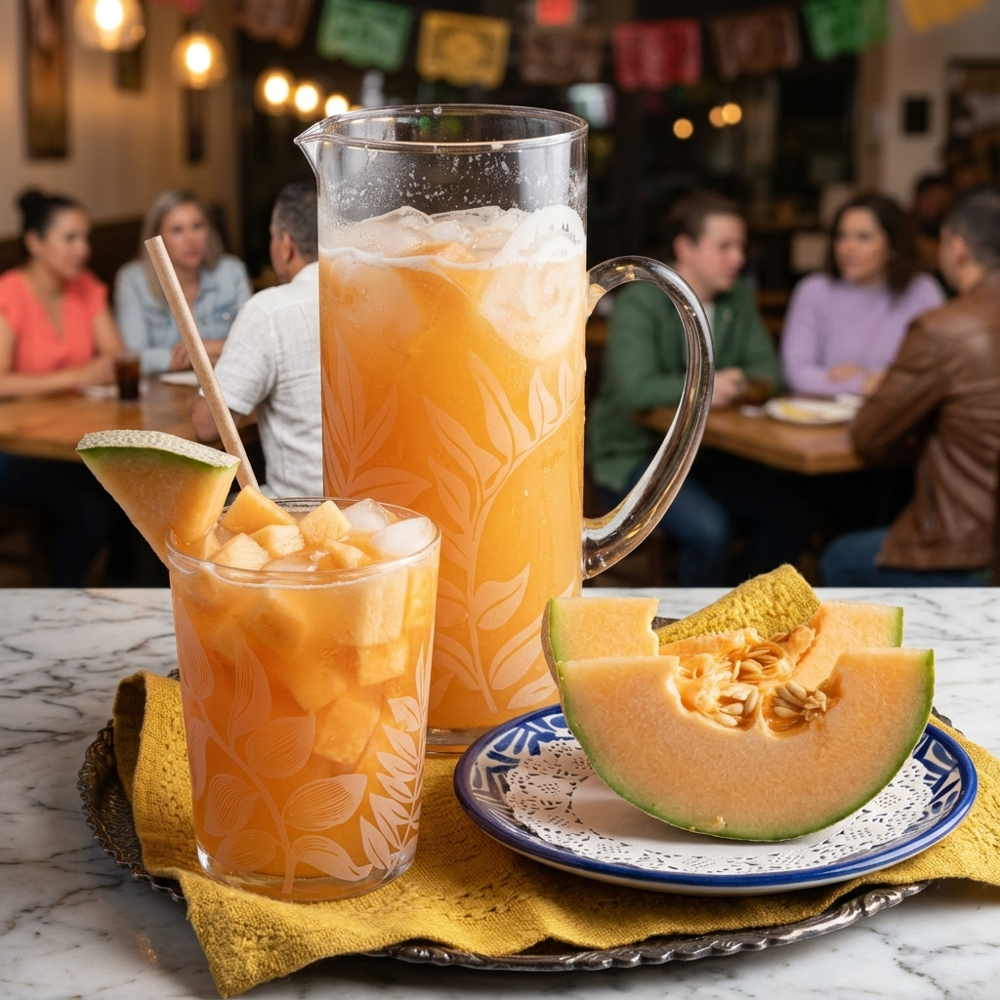
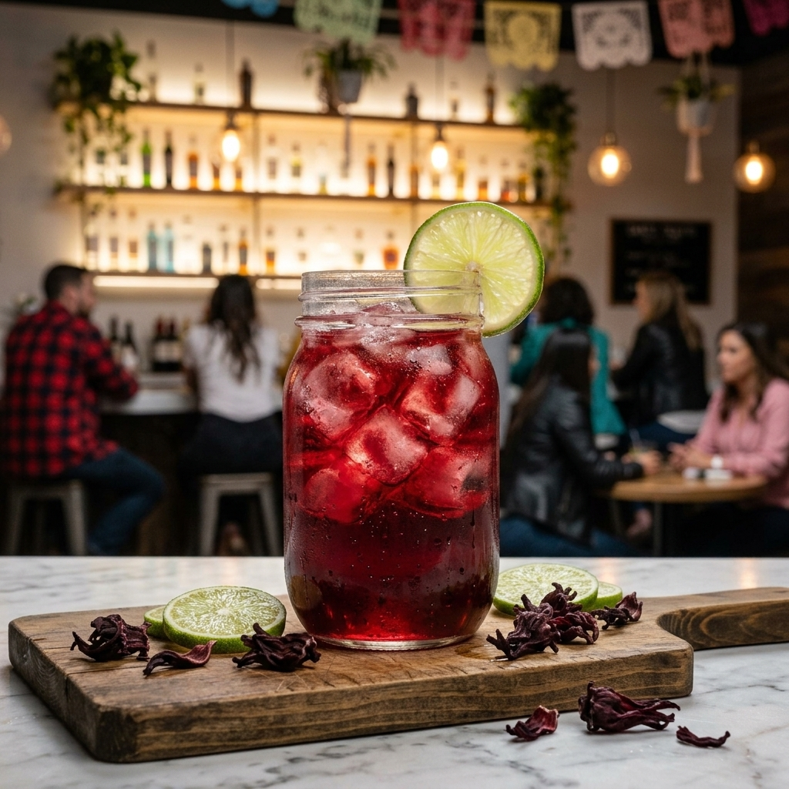
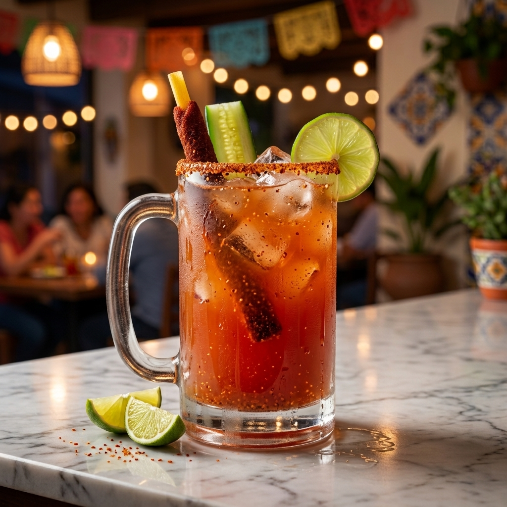
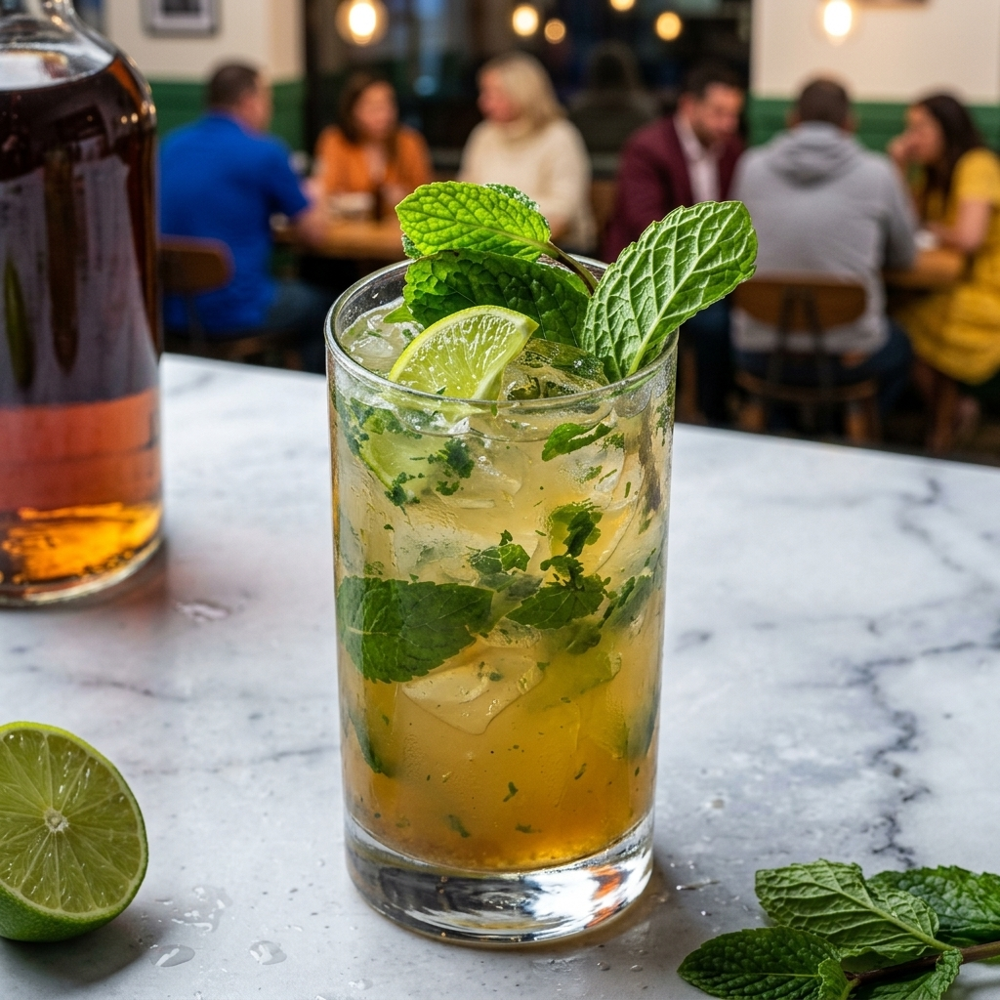
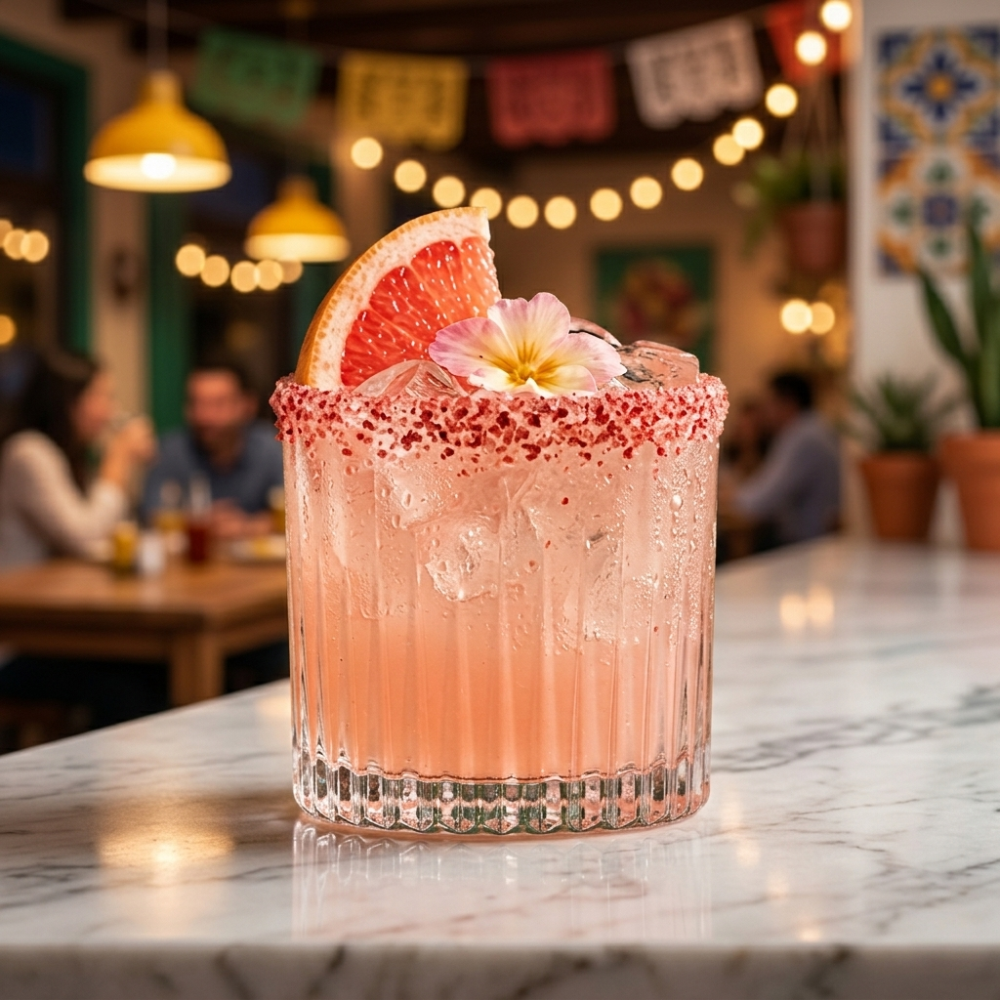
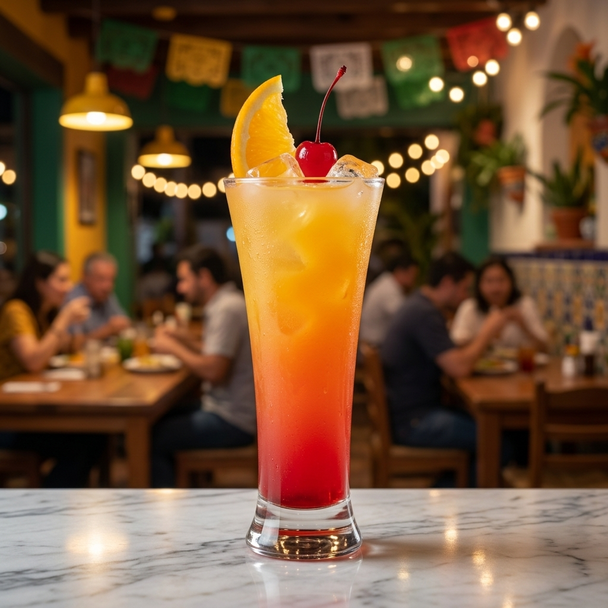

|
 Agua de Cantalupo🍹 Sem álcool Melão cantalupo batido com água e açúcar, servido com gelo. Suave, frutado e naturalmente adocicado. R$ 28,00 |
 Agua de Jamaica🍹 Sem álcool Agua da Jamaica, limão fresco, xarope de açúcar e gelo. Refrescante, levemente ácida e com um sabor marcante de hibisco. R$ 28,00 |
 Michelada🍸 Com álcool Cerveja mexicana, suco de limão, molho inglês e temperos, servida bem gelada com borda temperada. Refrescante e cheia de personalidade. R$ 35,00 |
|
 Mojito com Hortelã e Limão🍸 Com álcool Rum, limão fresco, hortelã e açúcar mascavo, com água com gás e bastante gelo. Cítrico, doce na medida e muito refrescante. R$ 35,00 |
 Paloma🍸 Com álcool Tequila, grapefruit, limão e água com gás, finalizada com uma pitada de sal. Leve, cítrica e muito refrescante. R$ 35,00 |
 Tequila Sunrise🍸 Com álcool Tequila, suco de laranja e grenadine, criando um drink colorido e suavemente adocicado. R$ 35,00 |